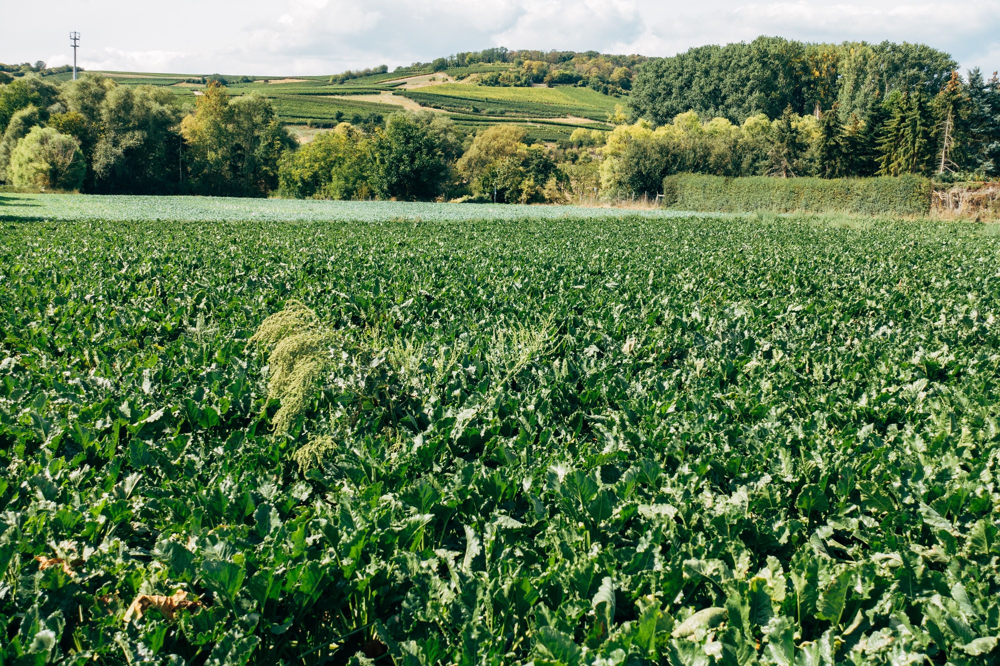

La Via Campesina
Home
The Problem
Why we need climate Justice
The industrial food system
Women and climate change
False solutions to climate change
Climate justice will not be handed from the top
The Solution
Why peasant AgroEcology
Peasant AE achieves CJ
Peasant AE and the struggle against patriarchy
Peasant AE empowers youth
Call to action
Who are we
Peasant - definition from UNDROP
African peasant
LVC members
the Peasant AE achieves CJ initiative

Previous
Next